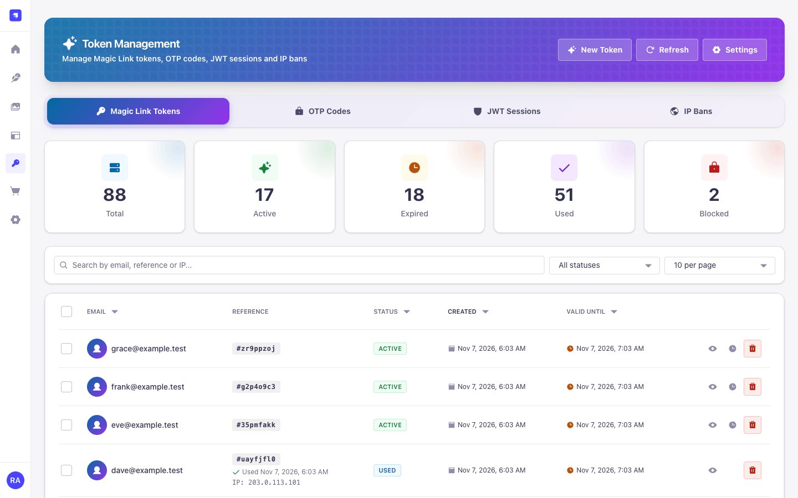
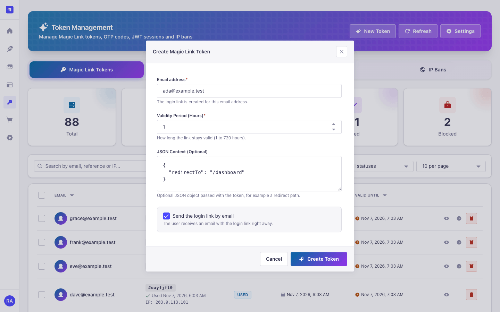
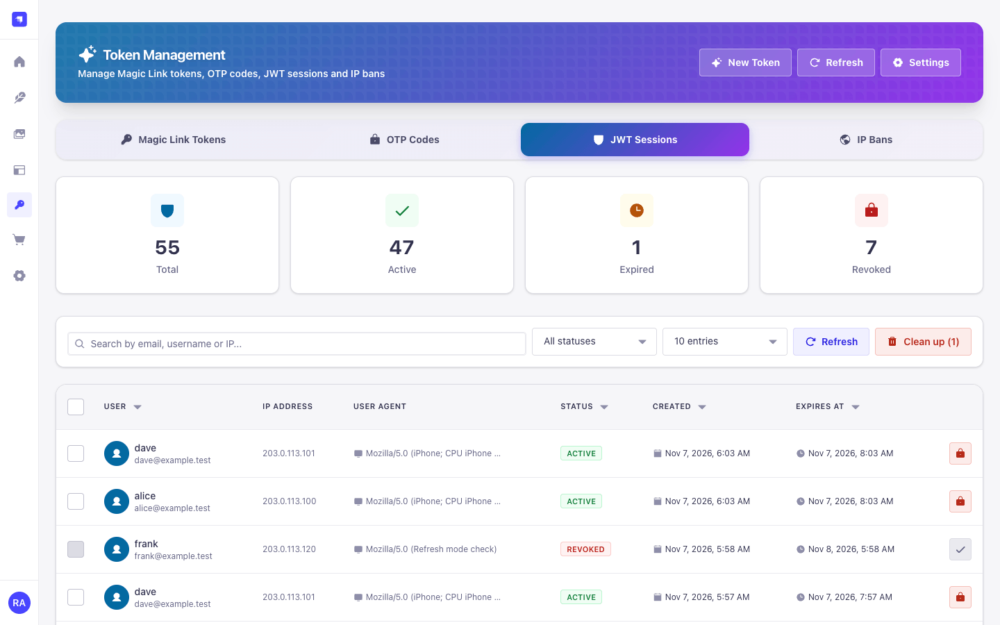
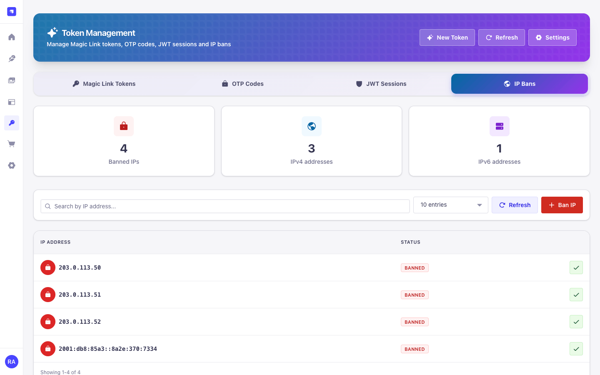
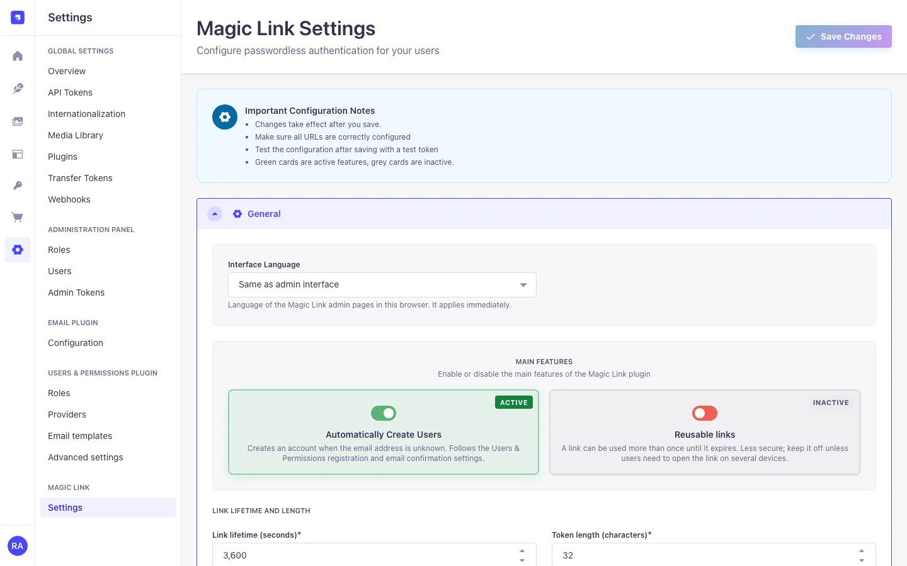
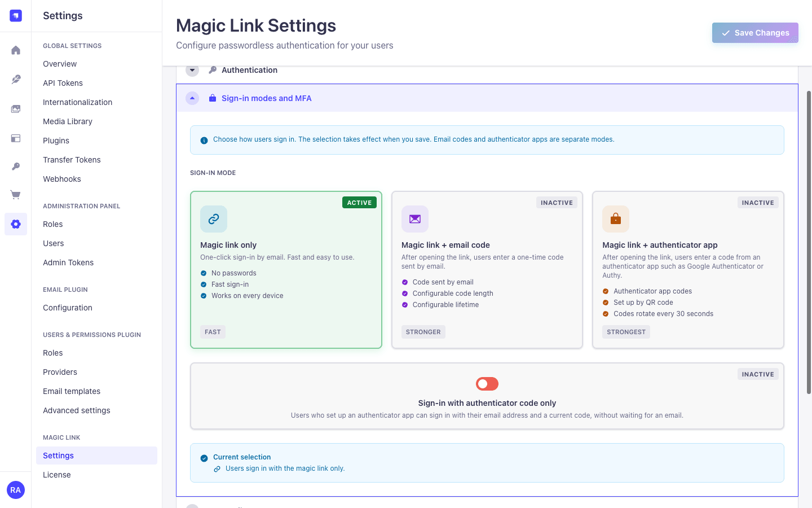
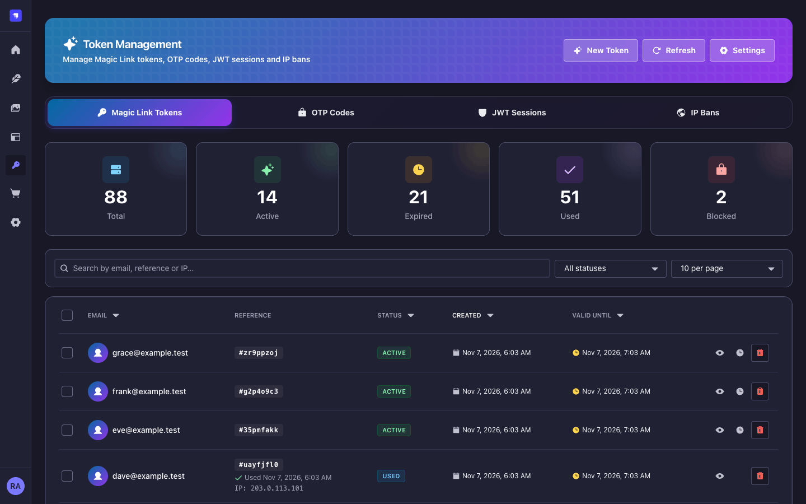
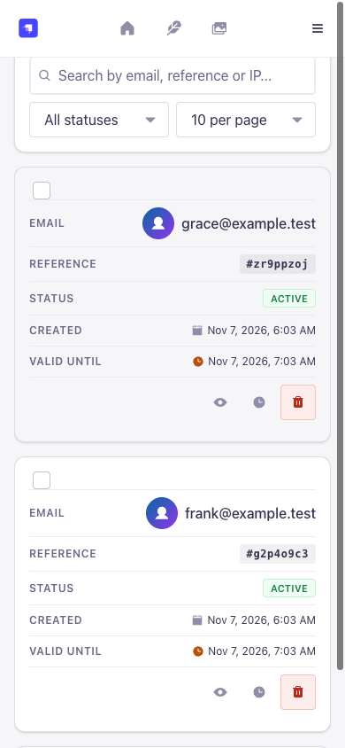
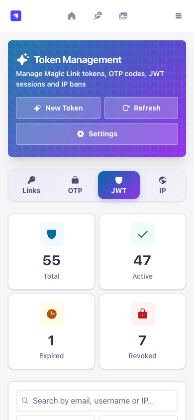

Magic links by e-mail
Hashed, expiring, single-use links sent through your Strapi e-mail provider, Magic Mail or Email Designer 5. The request never reveals whether an account exists.
Magic Link is a free, MIT-licensed Strapi 5 plugin for passwordless login: users type their e-mail address, click the link and get a normal Users & Permissions session.
When a link is not enough, add an e-mailed one-time code (OTP) or an authenticator app (TOTP) with backup codes.
Using Magic Link in production? Show your logo here



send-link and post the token to
/login.
^5.50.0 with Users & PermissionsMAGIC_LINK_ENCRYPTION_KEY and MAGIC_LINK_OTP_PEPPER, 32+
characters each
Passwordless authentication by e-mail, optional second factors, and an admin panel for tokens, sessions and IP bans. Every feature ships in the npm package; there is no key to unlock anything.
Your app calls POST /send-link with an e-mail address.
The user opens the link; your landing page posts the token to Strapi.
Strapi answers with a JWT, or first asks for an OTP or TOTP code.
Hashed, expiring, single-use links sent through your Strapi e-mail provider, Magic Mail or Email Designer 5. The request never reveals whether an account exists.
Ask for a one-time code from a second e-mail after the link click. Attempts are limited and counted atomically.
Optional or required authenticator apps. Users enrol during sign-in or later from their account, and get ten one-time backup codes.
Works with Users & Permissions in legacy JWT mode and in refresh mode, where
logins return a refresh token like /api/auth/local.
Pass a small context such as redirectTo through the link.
Each e-mailed link shows whether the provider accepted, rejected or bounced it.
Tokens, OTP codes, JWT sessions, IP bans and settings, in five languages, light and dark mode, with permissions enforced on the server.
The admin panel follows the Strapi Design System, in light and dark mode and on small screens. All screenshots use synthetic data.








Requires Strapi 5.50 or newer (acceptance host: 5.63.0), Node.js 22 to 26 and a configured Strapi e-mail provider. npm, yarn and pnpm install it without peer warnings.
npm install strapi-plugin-magic-link-v5
echo "MAGIC_LINK_ENCRYPTION_KEY=$(node -e "console.log(require('crypto').randomBytes(32).toString('hex'))")" >> .env
echo "MAGIC_LINK_OTP_PEPPER=$(node -e "console.log(require('crypto').randomBytes(32).toString('hex'))")" >> .env
npm run build && npm run develop
The plugin refuses to start without the two secrets (32 or more characters each).
For a throwaway local setup, MAGIC_LINK_ALLOW_DEV_SECRETS=true works
outside production.
In Settings → Magic Link → Settings → General, set the frontend base URL and login path of your landing page.
Send the first link.
curl -X POST http://localhost:1337/api/magic-link/send-link \
-H 'Content-Type: application/json' \
-d '{"email":"ada@example.com"}'
# { "email": "ada@example.com", "username": null, "sent": true, "delivery": "email" }The answer is the same whether or not the account exists. By default only existing users get a link; auto-registration is a setting.
Most options live in Settings → Magic Link → Settings: link lifetime and length, where links point, sender and templates, auto-registration, rate limits and the sign-in mode. The README lists every key with its default.
| Mode | Setting | After the link click |
|---|---|---|
| Link only | default | The user is signed in |
| Link + e-mail OTP | otp_enabled |
A code from a second e-mail |
| Link + TOTP (optional MFA) | mfa_mode: optional |
A code from the app if the user enrolled |
| Link + TOTP (required MFA) | mfa_mode: required |
A code from the app; enrolment on the spot if needed |
| TOTP only | totp_as_primary_auth |
No e-mail: POST /login-totp |
| Key | Default | Meaning |
|---|---|---|
frontend_url, frontend_login_path |
empty, /auth/magic-link |
Your landing page (https; http only for localhost) |
expire_period |
3600 |
Link lifetime in seconds |
stays_valid |
false |
Allow a link to be used more than once until it expires |
jwt_token_expires_in |
30d |
JWT lifetime in legacy mode |
rate_limit_max_attempts, rate_limit_window_minutes
|
5, 15 |
Requests per IP and per address in the window |
createUserIfNotExists +
allow_magic_links_on_public_registration
|
true, false |
Create accounts on first login (also needs users-permissions sign-ups) |
| Key | Default | Effect |
|---|---|---|
allowedLinkOrigins |
[] |
Login links may only point at these origins; admins cannot change the list |
rateLimit.redis |
off | Redis fast path for rate limits; the database stays the fallback |
rateLimit.store |
database | 'memory' keeps counters per process (single process only) |
deliveryWebhooks |
{} |
Bounce and complaint feedback from SendGrid, Mailgun, SES or Postmark |
| Variable | Required | Purpose |
|---|---|---|
MAGIC_LINK_ENCRYPTION_KEY |
yes | AES-256-GCM key for TOTP secrets, 32+ characters |
MAGIC_LINK_OTP_PEPPER |
yes | Key for OTP code hashes and backup-code HMACs, 32+ characters |
MAGIC_LINK_ENCRYPTION_KEY_PREVIOUS |
no | Old key during rotation; secrets are re-encrypted at startup |
MAGIC_LINK_ALLOW_DEV_SECRETS |
no | true allows derived development secrets outside production |
E-mail templates use placeholders such as {{LOGIN_URL}},
{{EXPIRY_TEXT}} and {{USER}}. Values are HTML-escaped and no
template code runs.
Behind a reverse proxy, set proxy: { koa: true, maxIpsCount: 1 } in
config/server.js so rate limits and IP bans see the real client address.
Grant these in Settings → Administration Panel → Roles → Plugins → Magic Link. The server checks them on every admin route; the admin pages only hide what a role cannot do.
| Action | Grants |
|---|---|
plugin::magic-link.read |
Menu entry and Tokens page: tokens, OTP codes, JWT sessions, IP bans |
plugin::magic-link.manage |
Create, block, extend and delete tokens; revoke sessions; ban IPs; cleanups |
plugin::magic-link.tokens.issue |
Create a link without e-mail (impersonation). Grant sparingly. |
plugin::magic-link.settings.read |
Settings page, rate-limit statistics, MFA summary |
plugin::magic-link.settings.update |
Save settings, rate-limit cleanup and reset |
plugin::magic-link.settings.security |
Link targets, templates, sender, account, MFA, code and rate-limit rules |
Users & Permissions: the login routes are public by design and protected by rate limits and IP bans. Grant the Magic-link → totp actions to the Authenticated role if users should manage their authenticator themselves.
What is protected, and how.
At least 132 bits, stored salted and hashed, expiring. A single-use link is consumed with a conditional update, so parallel clicks give one session.
send-link answers before any lookup or delivery, with the same body and
timing for every address.
Challenge state lives on the server. OTP attempts are counted before the comparison, TOTP codes cannot be replayed, and code checks are limited to 10 per account and 15 minutes even with rate limiting off.
Revoked JWTs stay blocked until they expire. In refresh mode a revocation ends the whole users-permissions refresh family, rotated tokens included.
Confirming an unconfirmed account by link, OTP or enrolment first ends its sessions and clears a password someone else may have set.
Every admin route checks a permission on the server. Impersonation
(tokens.issue) and settings that redirect links
(settings.security) have their own permissions.
Known limit: MFA covers the Magic Link login paths only. Password or social logins through Users & Permissions do not ask for a second factor, so disable the ones you do not use.
Report vulnerabilities privately through GitHub security advisories.
No telemetry, no usage statistics, no update check and no registration server. The plugin sends nothing about your installation anywhere.
| Connection | When |
|---|---|
| Your e-mail provider or Magic Mail | A link, an OTP code or a TOTP setup code is e-mailed |
sns.<region>.amazonaws.com |
Only with the SES bounce webhook: the SNS signing certificate and the subscription confirmation |
| Redis | Only with rateLimit.redis |
Everything else stays in your Strapi database: login tokens as salted hashes (deleted 30 days after expiry), OTP codes as keyed hashes, TOTP secrets encrypted with AES-256-GCM, one record per issued JWT (kept until 7 days after expiry) and rate-limit counters. Plugin logs contain no e-mail addresses, tokens or login URLs.
A login inserts one session row without a lock. With 4 Strapi processes on PostgreSQL 16, 100 simultaneous link clicks finished in 0.38 s.
Each process caches the JWT blocklist for 2 seconds, so a Content API request normally costs no extra query.
One row per key in magic_link_rate_limits. Redis is an optional fast
path; the database stays its fallback.
Expired codes, old tokens, session records and limiter rows are removed every 5 minutes by one process at a time.
Magic Link works with any number of Strapi processes on one shared database, for example 2 Railway replicas with 4 pm2 cluster workers each. Requests may land on any process; sticky sessions are not needed and Redis is optional.
One database for all processes. PostgreSQL (recommended) or MySQL/MariaDB. SQLite works for several processes on one machine and file, not across machines.
The same secrets everywhere: Strapi's APP_KEYS,
API_TOKEN_SALT, ADMIN_JWT_SECRET, JWT_SECRET,
TRANSFER_TOKEN_SALT, ENCRYPTION_KEY, plus
MAGIC_LINK_ENCRYPTION_KEY and MAGIC_LINK_OTP_PEPPER.
The real client IP. Behind Railway's edge proxy, set
proxy: { koa: true, maxIpsCount: 1 } in config/server.js.
Start the processes. On Railway, set the replica count in the service's scaling settings. For pm2 cluster mode:
module.exports = {
apps: [
{
name: 'strapi',
// Cluster mode needs a Node.js script, not `npm start`.
script: './node_modules/@strapi/strapi/bin/strapi.js',
args: 'start',
instances: 4, // or 'max'
exec_mode: 'cluster',
env: { NODE_ENV: 'production' },
},
],
};
Start it with pm2 start ecosystem.config.js. Inside a Railway
container, add pm2 to the project and use
pm2-runtime start ecosystem.config.js as the start command.
Plugin config: nothing is required. Do not set
rateLimit: { store: 'memory' } with several processes, or every limit
is multiplied by the number of processes.
| State | Mechanism |
|---|---|
| Login links, OTP codes, TOTP replay, backup codes | Conditional database updates: accepted exactly once across processes |
| JWT blocklist, IP bans, settings |
Written under a cluster-wide lock: PostgreSQL
pg_advisory_xact_lock, MySQL GET_LOCK, SQLite's write
lock
|
| JWT session records |
One row per JWT in magic_link_jwt_sessions, inserted without a lock
|
| Rate limits |
Table magic_link_rate_limits, or Redis with the database as
fallback
|
| New accounts, account claims, challenge starts | Locks and compare-and-set, so one address never gets two accounts |
| Cleanup jobs and startup migrations | One process at a time (a lease or the cluster lock) |
Short windows: a revocation reaches other processes within 2 seconds, changed rate
limits within 5 seconds. When several processes start at once on an empty database or
after a schema change, all but one may stop once with
relation ... already exists; the restarted process starts normally (pm2 and
Railway's on-failure policy restart it). Tested with 8 processes against SQLite and
PostgreSQL 16 (npm run test:cluster).
Public routes are mounted under /api/magic-link. Your landing page receives
?loginToken= and exchanges it with a POST, so the token stays out of access
logs and Referer headers.
const loginToken = new URLSearchParams(location.search).get('loginToken');
const res = await fetch('https://api.example.com/api/magic-link/login', {
method: 'POST',
headers: { 'Content-Type': 'application/json' },
body: JSON.stringify({ loginToken }),
});
const result = await res.json();
// result.jwt, or result.requiresOTP / requiresTOTP / requiresTOTPSetup| Method | Path | Purpose |
|---|---|---|
| POST | /send-link |
Send a magic link to { email, context? } |
| POST | /login |
Exchange { loginToken } (GET kept for compatibility) |
| POST |
/otp/send, /otp/resend, /otp/verify
|
E-mail OTP step |
| POST | /verify-mfa-totp |
TOTP or backup code after the link |
| POST | /totp/enroll, /totp/enroll/confirm |
Enrol an authenticator during a required-MFA login |
| GET, POST |
/totp/status, /totp/setup, /totp/confirm,
/totp/disable,
/totp/backup-codes
|
Self-service for signed-in users (Authenticated role) |
| POST | /login-totp |
TOTP-only login |
| POST | /delivery-webhooks/:provider |
Signed bounce and complaint feedback (off until a secret is set) |
Errors use the Strapi envelope with a stable error.key, for example
token.invalid, mfa.invalidCode or
rate.limit.exceeded (with details.retryAfter). Messages are
translated into English, German, French, Spanish and Portuguese.
With jwtManagement: 'refresh' in Users & Permissions, logins return a
short-lived JWT and a refresh token; renew with the native
POST /api/auth/refresh. Admin routes live under
/magic-link and need an admin JWT plus the permission from the table above.
The
README
lists every route with request and response examples and all error answers.
No. Magic Link signs in the users of your app (Users & Permissions accounts). The Strapi admin login stays as it is.
For a good experience, yes: a form that calls send-link and a landing
page that posts the token to /login. Any framework works.
Yes, when createUserIfNotExists,
allow_magic_links_on_public_registration and the users-permissions
sign-ups are all on.
The login routes are REST. The JWT they return works for GraphQL like any users-permissions JWT, and revoked tokens are rejected there too.
No. Every feature is in the npm package. 7.0.0 removed the old optional key field and deletes a stored key on its first start.
Yes. /api/auth/local keeps working; the Magic Link MFA settings only
apply to Magic Link logins.
7.0.0 removes the optional registration key, its admin page and its two admin routes.
Logins, second factors, sessions, context and delivery status are
unchanged, and the first start deletes a stored key. Upgrading from 5.x? Work through
the 6.0.0 guide first: new secrets, admin permissions, the POST token exchange and
template placeholders.
| Magic Link | Strapi | Node.js |
|---|---|---|
| 7.x | 5.50.0 or newer (acceptance host: 5.63.0) | 22 to 26 |
| 6.x | 5.24.0 or newer | 22 to 26 |
| 5.x | 5.0.0 or newer | 18 to 22 |
Releases use semantic-release and Conventional Commits and are published to npm with trusted publishing and provenance. Dependabot proposes weekly updates; patch and minor updates merge after lint, tests, build and verify pass. Run the same checks locally:
npm ci --legacy-peer-deps
npm run lint && npm run format:check && npm test
npm run build && npm run verifyUpgrade to 7.0.0Upgrade from 5.xBrowse releasesReport an issueInstall from npm